01
Днище и колёсные арки
Антикоррозийное покрытие помогает защитить зоны, которые контактируют с влагой и дорожными загрязнениями.
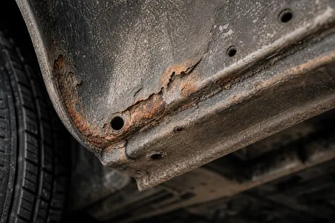

Антикоррозийная обработка автомобиля в Москве
Скидка 10% на шумоизоляцию арок
Скидка 5% на комплексы
Предложения действуют до 31 декабря 2026 года
Рассчитать стоимость
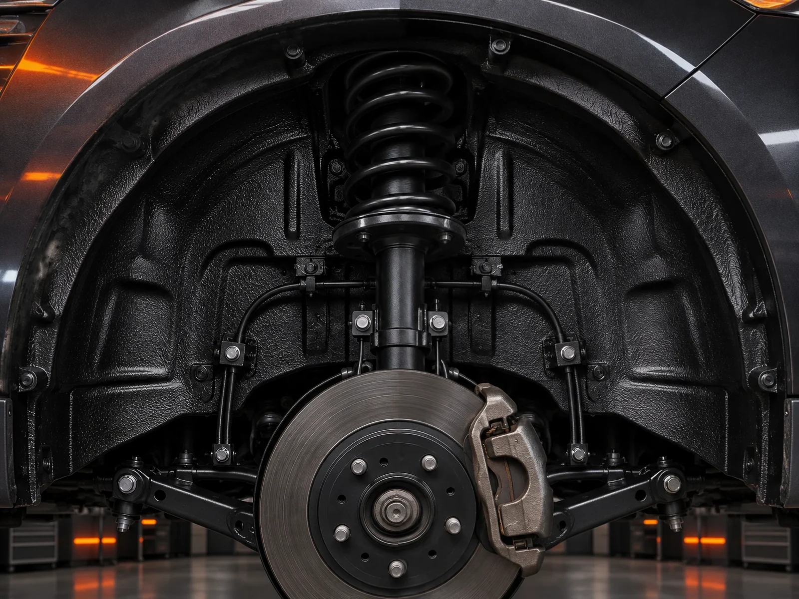
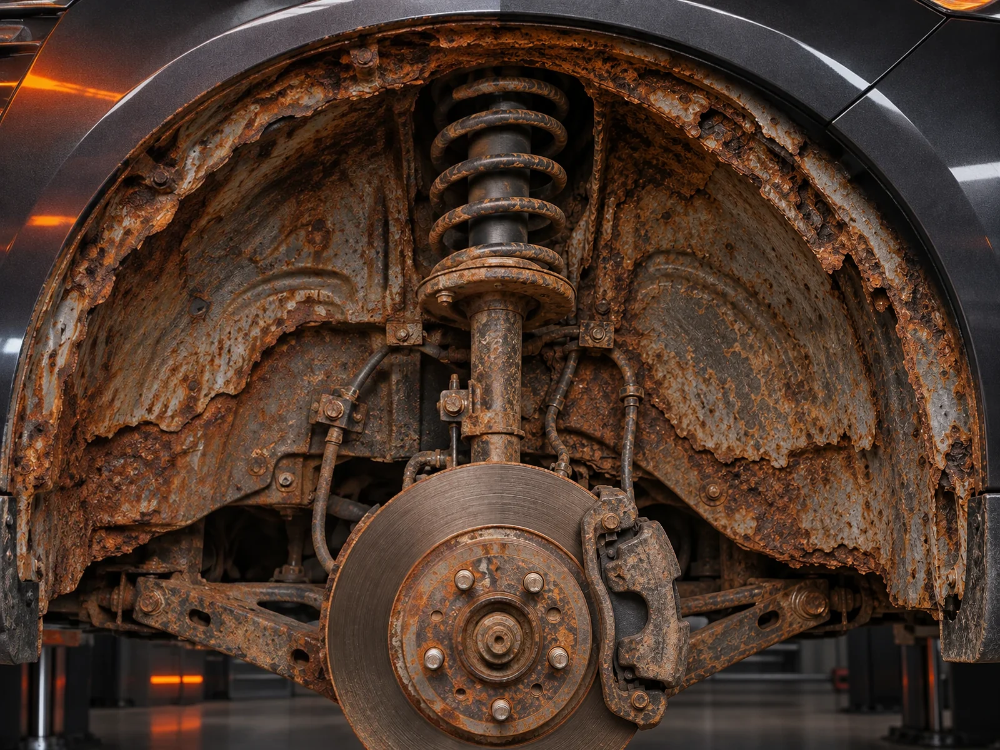
Антикоррозийное покрытие помогает защитить зоны, которые контактируют с влагой и дорожными загрязнениями.

Не все участки кузова видны при обычном осмотре. Эти зоны тоже важно проверить перед выбором защиты.
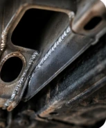
Коррозия может развиваться незаметно, ослабляя металл. Осмотр помогает определить, какая подготовка нужна.
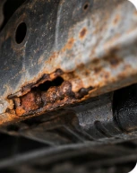
На бесплатной диагностике оценим состояние автомобиля и объясним, какой пакет и подготовка ему подходят.
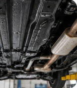
Если ржавчина уже появилась, начнём с бесплатного осмотра. Проверим состояние металла и объясним, какая подготовка нужна перед обработкой.

Выберите класс — покажем стоимость трёх пакетов.
Три варианта защиты днища, колёсных арок и скрытых полостей.
Цены для класса SUV, минивэн

На днище, в колёсные арки и скрытые полости наносится состав TEKKO ML с прозрачным жёлтым оттенком.
18 700 ₽

Днище и колёсные арки обрабатываются чёрным защитным составом, скрытые полости — специальным восковым составом.
Используем профессиональные материалы Mercasol, TEKKO и Noxudol.
46 400 ₽

Все современные решения в области антикоррозийной защиты собраны в одном пакете.
Максимальный уровень защиты автомобиля с использованием профессиональных составов TEKKO и Noxudol с содержанием цинка.
Днище, колёсные арки и скрытые полости обрабатываются специальными чёрными защитными составами.
70 100 ₽
| Класс | Старт | Стандарт | Премиум |
|---|---|---|---|
| A, B | 13 900 | 34 300 | 53 500 |
| C, D | 15 100 | 37 600 | 58 300 |
| E, S | 16 300 | 41 200 | 64 700 |
| SUV, минивэн | 18 700 | 46 400 | 70 100 |
| Рамные | 38 400 | 83 700 | 94 500 |

Нажмите на марку — покажем модели и цены трёх пакетов. Пока открыта Haval, остальные марки считает калькулятор выше.
Посмотрите основные этапы работы.
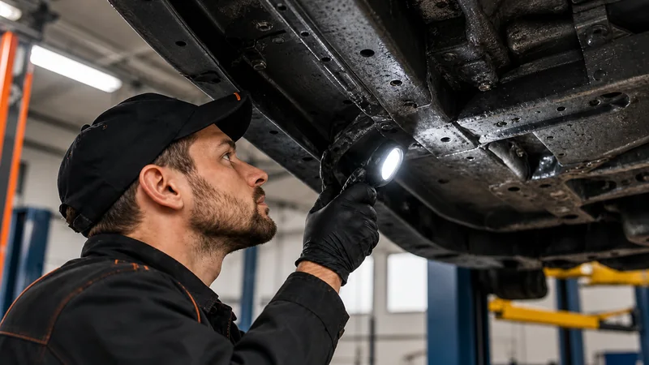
Проверяем состояние металла и согласуем подготовку.

Подготавливаем зоны обработки, укрываем весь кузов и тормоза.

Обрабатываем днище, арки и скрытые полости.

Проверяем результат и оформляем паспорт обработки.
Слева — металл после нескольких зим с реагентами, справа — после обработки. Потяните ползунок.


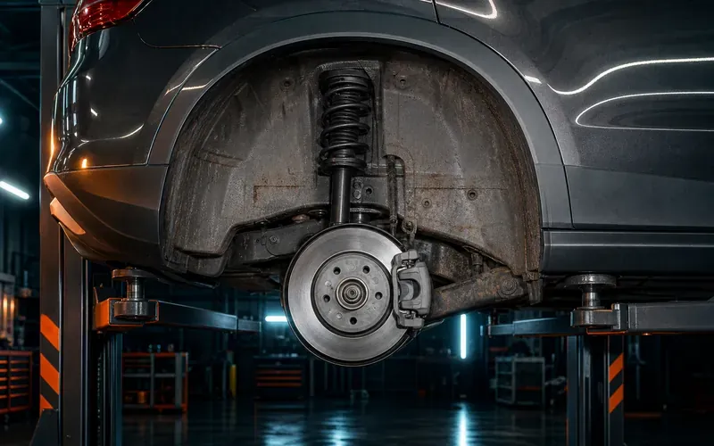
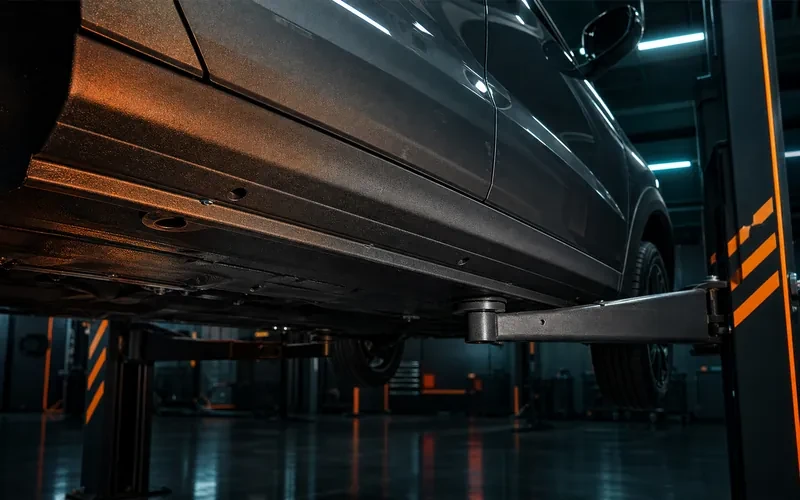

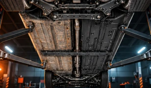
Выбираем решение с учётом состояния автомобиля и необходимых работ.
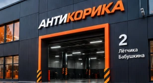
Москва, Лётчика Бабушкина, 2. В навигаторе ищите «Антикорика».

Фиксируем обработку и проверяем результат перед выдачей автомобиля.
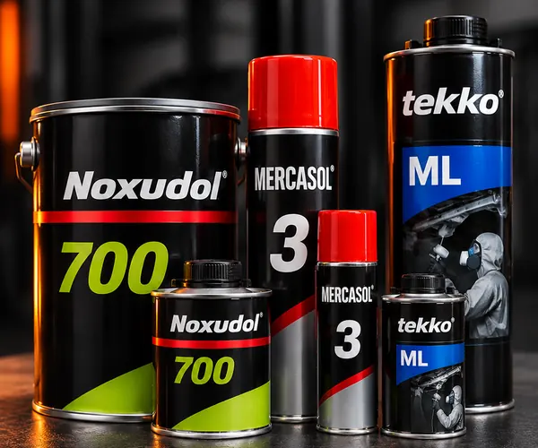
Профессиональные защитные материалы для разных зон автомобиля.
Официальный документ, подтверждающий проведение обработки вашего автомобиля.
В паспорте фиксируются выполненные работы, используемые защитные материалы и основные этапы обработки. Он позволяет сохранить историю антикоррозийной защиты автомобиля и иметь подтверждение проведённого обслуживания.
Антикорика. Ржавчине нет шансов.
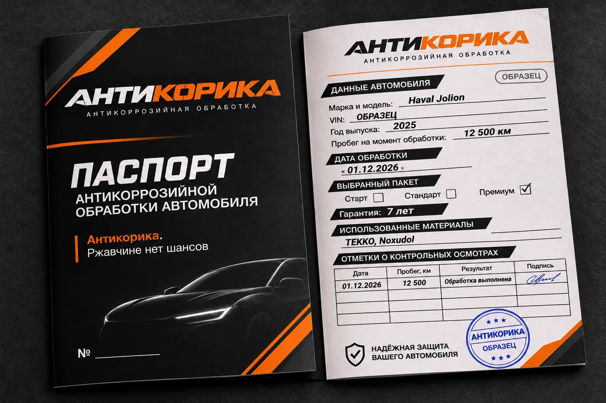
Руководитель центра
Опыт работы — уточняетсяМастер антикоррозийной обработки
Опыт работы — уточняетсяСпециалист по подготовке автомобиля
Опыт работы — уточняетсяМастер контроля качества
Опыт работы — уточняетсяЗапах возможен. Первые дни проветривайте салон, не оставляйте машину надолго в закрытом гараже.
Наше специализированное оборудование позволяет обрабатывать все труднодоступные места.
От четырёх до двенадцати часов.
Заводская защита обычно закрывает не все зоны: скрытые полости и швы часто остаются без состава. Поэтому мы рекомендуем делать антикоррозийную обработку даже на новых автомобилях.
Да, если металл не сгнил насквозь: очаги зачищаем и обрабатываем до нанесения состава. Если нужна сварка — скажем на осмотре, обработку в таком месте не делаем.
Да. Нужно соблюдать технический регламент.
Мы предлагаем все способы оплаты.
Оставьте номер телефона — согласуем удобное время бесплатной диагностики.
Ответим в течение 5 минут в рабочее время.
Первая линия. Ориентир в навигаторе — «Антикорика».